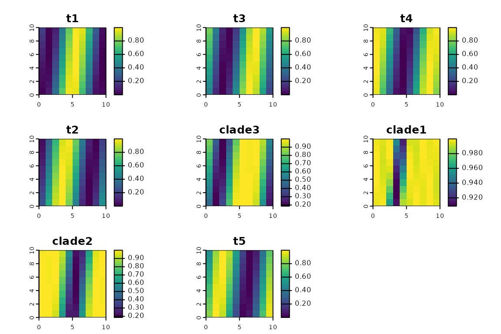
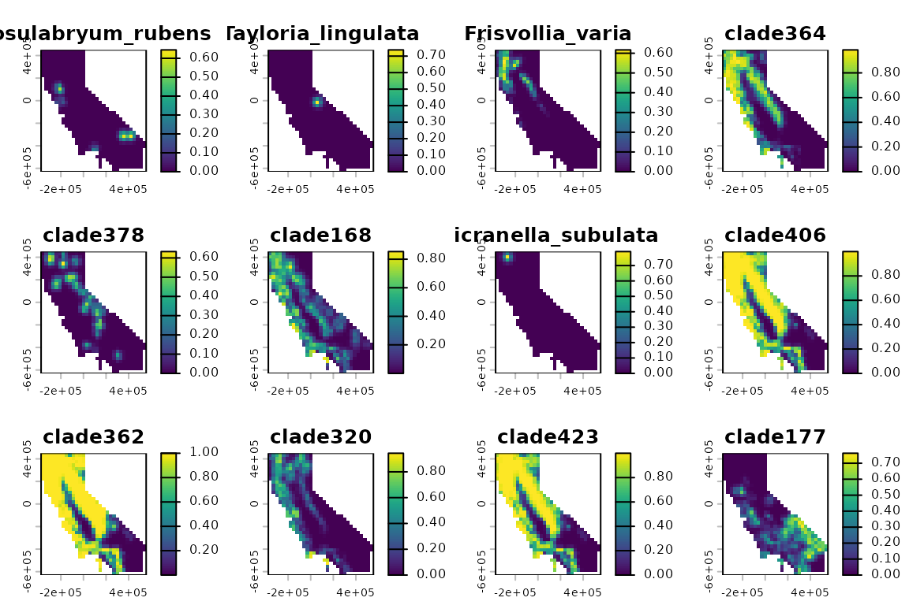
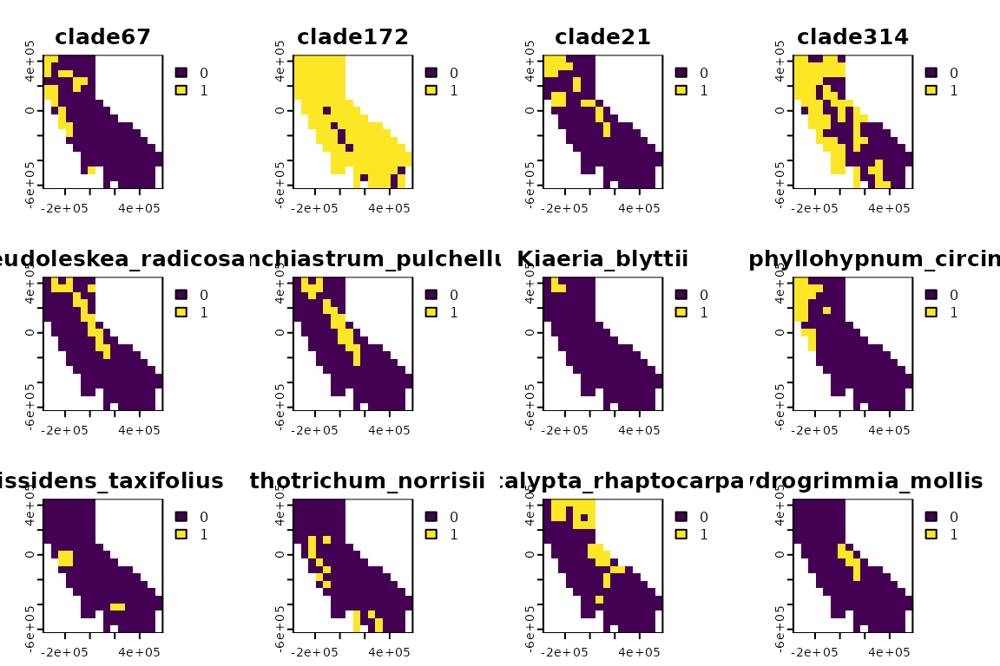

Introduction
This vignette demonstrates the basic structure and creation of a
spatial phylogenetic data set, which is the first step of any analysis
using this R package. Spatial phylogenetic analyses require two
essential ingredients: data on the geographic distributions of a set of
organisms, and a phylogeny representing their evolutionary
relationships. This package stores these data as objects of class
'phylospatial'.
The core idea of spatial phylogenetics is that analyses account for every every single “lineage” on the phylogenetic tree, including terminals and larger clades. Each lineage has a geographic range comprising the collective ranges of all terminal(s) in the clade, and it has a single branch segment whose length represents the evolutionary history that is shared by those terminals and only those terminals. When calculating biodiversity metrics, every lineage’s occurrence in a site gets weighted by its branch length.
In this vignette, we’ll create a lightweight example of a
phylospatial object, look through its components to
understand how it is structured, and then demonstrate some more nuanced
use cases with real data. Finally, we’ll show how
phylospatial objects can also be used for traditional
non-phylogenetic biodiversity data analyses, in cases when incorporating
a phylogeny is impossible or undesirable.
A minimal example
Let’s begin by creating a simple phylospatial object. To
do this, we use the phylospatial() function, which has two
key arguments: tree, a phylogeny of class
phylo, and comm, a community data set
representing the geographic distributions of the terminal taxa (usually
species). In the code below, we simulate a random tree with five
terminal taxa, and a raster data set with 100 grid cells containing
occurrence probabilities for each terminal, with layer names
corresponding to species on the tree. (A differentiating feature of the
phylospatial library is that it supports quantitative data
types like probabilities or abundances, in addition to binary community
data.) Then we pass them to phylospatial():
library(phylospatial); library(terra); library(ape); library(sf)
# simulate data
set.seed(1234)
n_taxa <- 5
x <- y <- 10
tree <- rtree(n_taxa)
comm <- rast(array((sin(seq(0, pi*12, length.out = n_taxa * x * y)) + 1)/2,
dim = c(x, y, n_taxa)))
names(comm) <- tree$tip.label
# create phylospatial object
ps <- phylospatial(comm, tree)
ps
#> `phylospatial` object
#> - 8 lineages across 100 sites
#> - community data type: probability
#> - spatial data class: SpatRaster
#> - dissimilarity data: noneStructure of a phylospatial object
Phylogeny
Our phylospatial object is a list with six elements.
Let’s look at each of these in turn, starting with the
tree. This is the phylogeny we simulated, a tree of class
phylo with 5 tips and 3 larger clades. Note that the branch
lengths of the input tree are scaled to sum to 1. We can use
plot() function to view the tree.
Community matrix
The other key component is comm, which is a
matrix containing occurrence data. Although we supplied
community data as a raster, it’s stored here as a matrix, with a row for
each grid cell and a column for each taxon. Let’s take a look at the
matrix. We can also plot the community data, which re-casts
it as a spatial data set (a raster, in this case).
head(ps$comm)
#> clade1 clade2 t5 t4 clade3 t3 t1
#> [1,] 0.9980319 0.9889042 0.5000000 0.97780849 0.8226247 0.781536164 0.18807934
#> [2,] 0.9953701 0.9919546 0.8428239 0.94881279 0.4245239 0.421627315 0.00500815
#> [3,] 0.9997640 0.9997100 0.9991060 0.67560320 0.1861159 0.104363637 0.09127841
#> [4,] 0.9517871 0.9194606 0.8838080 0.30684210 0.4013750 0.002378797 0.39994761
#> [5,] 0.9172596 0.5786829 0.5596673 0.04318460 0.8036150 0.171166120 0.76305863
#> [6,] 0.9936764 0.2254502 0.2030598 0.02809548 0.9918358 0.518882839 0.98303074
#> t2
#> [1,] 0.03467274
#> [2,] 0.28671168
#> [3,] 0.65480785
#> [4,] 0.93866795
#> [5,] 0.98383430
#> [6,] 0.76573040
plot(ps, "comm")
We can see that in addition to our 5 terminal taxa, the data set also
includes geographic ranges for the 3 larger clades. Internally, the
phylospatial() function constructs ranges for every
multi-tip clade on the tree, based on the topology of the tree and the
community data for the tips.
The specific way that these clade ranges are constructed depends on
the type of community data being used. The package supports three data
types: "probability", "abundance", and
"binary". Recall that our data were probabilities; we could
have specified that explicitly by setting
data_type = "probability" when we constructed our
phylospatial object, but the function detected this based on the values
in our data set, and we can confirm that it did so correctly by checking
ps$data_type. For probabilities, the default function used
to calculate clade occurrence values gives the probability that at least
one member of the clade is present in a given site. Abundance and binary
data have their own default functions. (You can also override the
defaults by supplying your own clade_fun—for example, if
you had occurrence probabilities that you knew were strongly
non-independent among species, you could specify
clade_fun = max.) The function that was used for a given
data set can be accessed at ps$clade_fun.
Note that you can also specify your own clade ranges to
phylospatial() rather than letting it build them for you,
by setting build = FALSE. You might want to do this if, for
example, you have modeled the distributions of every clade in addition
to every terminal species in your data set.
Spatial data
The spatial component is the last key piece of our
phylospatial object. (The only other element we haven’t mentioned here
is dissim, which is covered in the vignette on beta
diversity.) The spatial component of the object contains spatial
reference data on the geographic locations of the communities found in
each row of the community matrix.
In this example, the spatial data is a raster layer inherited from
the SpatRaster data we supplied as our comm.
You can also supply vector data (points, lines, or polygons) as an
sf object. If the spatial data is in raster, polygon, or
line format, phylospatial will check that all features have
equal area or length, which is an important assumption underlying
various functions in the package.
Also note that spatial data isn’t required; community data provided as a matrix works just fine.
A realistic example
Now let’s look at creating a phylospatial data set using real data.
To do this, we’ll use the example “moss” data set that ships with the
package, representing a phylogeny and modeled occurrence probabilities
for several hundred species of moss in California. The function
moss() returns a pre-constructed phylospatial
object based on these data, but here let’s build one from scratch. In
the code below we’ll load a raster data set with a layer of occurrence
probabilities for each species, and a phylogeny representing their
evolutionary relationships. We’ll then pass these to
phylospatial().
moss_comm <- rast(system.file("extdata", "moss_comm.tif", package = "phylospatial"))
moss_tree <- read.tree(system.file("extdata", "moss_tree.nex", package = "phylospatial"))
ps <- phylospatial(moss_comm, moss_tree)
plot(ps, "comm")
plot(ps, "tree", type = "fan", show.tip.label = FALSE)
Non-phylogenetic data
While the phylospatial library is obviously designed for
phylogenetic analyses, it’s worth noting that it also supports
non-phylogenetic analyses. In cases where a phylogeny is unavailable or
where a traditional species-based biodiversity analysis is desired, you
can create a data set by calling phylospatial() without
providing a tree. All major functions in the package will still work,
and will assume that the taxa in comm are independent and
equally weighted.
In fact, traditional species-based methods can actually be considered
a specific case of more general phylogenetic methods, in which species
are assumed to be connected on a “star” phylogeny with a single polytomy
and equal branch lengths. In phylospatial, support for
non-phylogenetic data is implemented by creating a star phylogeny if no
phylogeny is provided by the user. Here’s how this looks for the simple
community data we created above:
ps <- phylospatial(comm)
plot(ps, "tree", type = "fan")